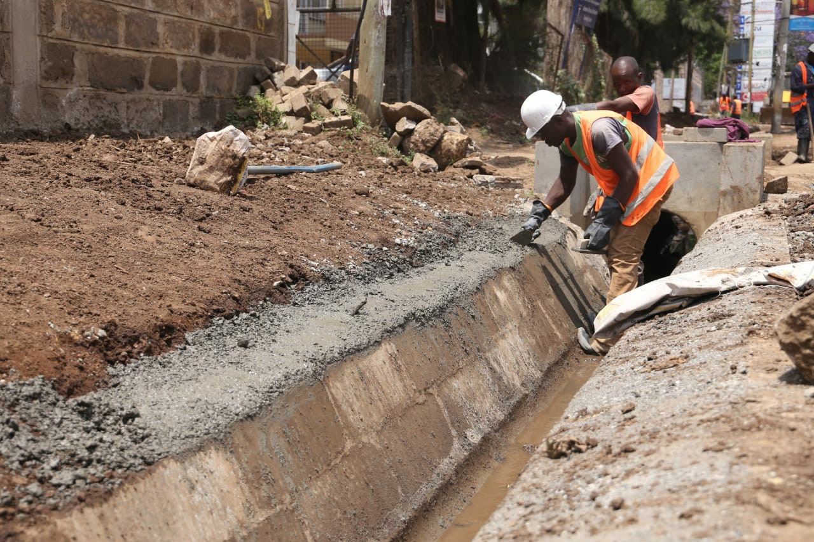

Garbage is one of the hazadous challenge we as Africans in this our century .It has resulted to
many diseases to the inhabitant species of the different countries thereby making us suffer for unknown
sickness hence importing medicine from well developed countries.
Well actualy the problem is solemnly in us and what are we doing to control this attack ?????
Below are some of the calamities we face in failure not to control garbage disposal .
Diseases
Diseases
Causes
Results
Cholera
Stagnated water
Fever, Headache which is servere that leads disruption of sleep
Bilharzia
Eating contaminated food
Continous Diarrhoea,Severe headaches Vomiting
This are just some of the examples of water leading diseases .
Personal ways to tackle this kind of diseases .
Below are simple ways to help you meet you ways of control this diseases

Drain all stagnant water through a draining channels.
Always wash your hands and utensils after use.
Always ensure each place meet its basic cleanliness. A regular wash enables you meet this
expectation.
Our companies
Takaout is one the top leading company with the aim of providing quality education
on control of Takataka(Garbage)
We also offer disposal facilities that are availabel and affordable to meet the exact pocket friendly
prize
We are located on Main CBD area where are accessible to everyone.
Some of the gargage of the disposal facilities we have include :
Garbage tins
They are very light in weight .They can be carried by any by medium heights .
They come in different colours just as shown in the image display .
Their prises come in different values depending on the suitable size of your choice .
Garbage trucks
They are located at every place in your residence .
They are affodable . Deliver in time and
we
ensure you have quality services.
About us
Takaout solution manages all garbage all garbage in your homestead or your workplace . We have marked the
best garbage solution company for our effecient services .
This has enabled us do more and more research on our better ways to increase our efficiency .